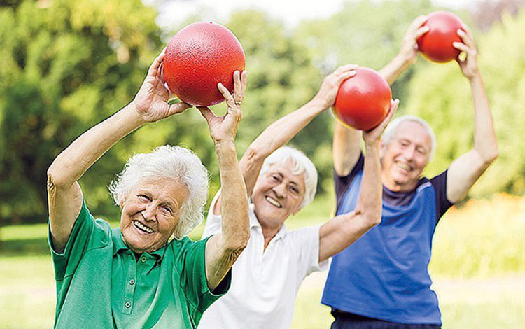

Günümüzde 100 yaşına ulaşmak artık hayal olmaktan çıkıyor. Ancak uzun ve sağlıklı bir yaşam için birtakım alışkanlıklar edinmek önemlidir. İşte 100 yaşına gelmek için yapılması gerekenler:
Sağlıklı Beslenme Alışkanlıkları
Uzun bir ömür için sağlıklı beslenme önemlidir. Düzenli olarak sebze,
meyve, tam tahıllar ve sağlıklı yağları içeren bir diyet benimsemek,
vücudun ihtiyaç duyduğu besinleri sağlar.

Aktif Bir Yaşam Tarzı
Fiziksel aktivite sadece beden sağlığı için değil, aynı zamanda
zihinsel sağlık için de önemlidir. Haftada birkaç kez düzenli egzersiz
yapmak, kasları güçlendirmek ve kalp sağlığını desteklemek için önemli
bir adımdır.
Stresten Uzak Durma
Stres, yaşlanma sürecini hızlandırabilir. Meditasyon, yoga veya
hobiler aracılığıyla stresten uzaklaşmak, hem zihinsel hem de fiziksel
sağlığı olumlu yönde etkiler.
Düzenli Sağlık Kontrolleri
Sağlık durumunuzu düzenli olarak kontrol ettirmek, potansiyel
sorunları erken aşamada tespit etmenin önemli bir yoludur. Doktor
muayeneleri, tarama testleri ve gerekirse aşılarla sağlığınızı
koruyun.
Aktif Zihinsel Yaşam
Zihinsel aktiviteler, beyin sağlığını destekler. Kitap okuma, bulmaca
çözme, öğrenmeye devam etme ve sosyal etkileşimler, zihinsel sağlığı
korumanın önemli yollarıdır.
Sosyal Bağlantılar Kurma
Aile ve arkadaşlarla güçlü sosyal bağlantılar kurmak, duygusal destek
sağlar ve yaşam kalitesini artırır.
 Enerjik ve Sağlıklı Olmak
Enerjik ve Sağlıklı Olmak
 Anne Sütü Bebeğin İlk Aşısıdır!
Anne Sütü Bebeğin İlk Aşısıdır!